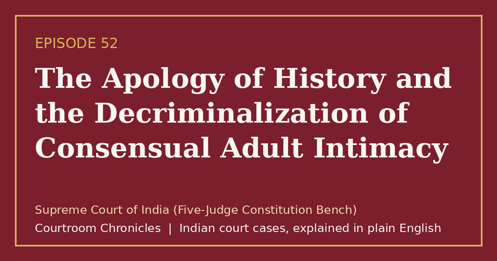

Episode 52
The Apology of History and the Decriminalization of Consensual Adult Intimacy
A unanimous five-judge Constitution Bench struck down the colonial-era criminalization of consensual adult intimacy in private as unconstitutional.
Constitutional lawFundamental rightsPrivacyCriminal law
#CourtroomChronicles#IndianLaw#ConstitutionalLaw#Section377#FundamentalRights#Article21#SupremeCourtOfIndia

Listen
- Court
- Supreme Court of India (Five-Judge Constitution Bench)
- Date of Decision
- September 6, 2018
- Challenged Provision
- Section 377 of the Indian Penal Code, 1860 criminalizing consensual private sexual acts
- Prior Reversal
- 2013 two-judge bench ruling that had overturned a 2009 High Court decriminalization order
- Bench Consensus
- Unanimous five-to-zero verdict across four concurring opinions
Key takeaways
- Consensual sexual acts between adults in private are protected by constitutional guarantees of equality, privacy, and dignity.
- Fundamental rights belong equally to every citizen regardless of numerical minority status.
- Non-consensual sexual offences and offences involving minors remain strictly punishable under criminal law.
The case in brief
Enacted in 1860, Section 377 of the Indian Penal Code punished any sexual act deemed against the order of nature with imprisonment extending up to life, turning private consensual intimacy between adults into a cognizable offence. Although a High Court read down the provision in 2009 to exclude consenting adults, a two-judge Supreme Court bench reversed that relief in 2013, describing affected citizens as a minuscule fraction and leaving the statute intact.
Five individuals later filed a writ petition under Article 32 seeking protection for their dignity, privacy, and equal citizenship after a nine-judge bench affirmed privacy as a fundamental right in 2017. During the hearing, the Union government left the validity of consensual private adult acts to the court's wisdom while opposing any change to marriage or non-consensual provisions.
On September 6, 2018, a five-judge Constitution Bench unanimously overruled the 2013 decision and struck down Section 377 insofar as it criminalized consensual sexual conduct between adults in private. The court held that penalizing innate sexual orientation violated constitutional equality, non-discrimination, free expression, and personal dignity, while keeping non-consensual acts, acts involving minors, and bestiality punishable.
Timeline
- Colonial Penal Code Enacted
Section 377 is enacted in the Indian Penal Code, criminalizing non-procreative sexual acts with up to life imprisonment.
- High Court Reads Down Law
The Delhi High Court declares Section 377 unconstitutional insofar as it criminalizes consensual sexual acts between adults in private.
- Two-Judge Bench Reversal
A two-judge Supreme Court bench sets aside the High Court ruling and restores the criminalization of consensual adult acts.
- Unanimous Constitution Bench Verdict
Five judges unanimously decriminalize consensual adult intimacy in private and overrule the 2013 precedent.
- New Penal Code Commences
The Bharatiya Nyaya Sanhita, 2023 takes effect without any counterpart to Section 377 for consensual adult acts.
What the court decided
Writ petition allowed unanimously (5:0); Section 377 of the Indian Penal Code declared unconstitutional to the extent it criminalized consensual sexual conduct between adults in private, overruling the 2013 two-judge bench decision.
Key holdings
- Criminalizing consensual adult intimacy is manifestly arbitrary under Article 14 because it fails to distinguish between consensual and non-consensual acts.
- Discrimination based on sexual orientation constitutes prohibited sex discrimination under Article 15(1) of the Constitution.
- Sexual orientation is an essential attribute of privacy, dignity, and personal autonomy protected under Articles 19(1)(a) and 21.
- Constitutional morality must prevail over majoritarian social morality; Section 377 remains enforceable only against non-consensual acts, acts with minors, and bestiality.
Legal principles
Constitutional Morality Over Social Morality
Fundamental rights cannot be curtailed by popular prejudice, majoritarian disapproval, or historical stigma.
In this case: The bench held that courts must test laws against constitutional values of liberty, equality, and fraternity rather than transient societal attitudes.
Manifest Arbitrariness
A statutory provision that is capricious, irrational, or lacks an adequate determining principle violates the guarantee of equality under Article 14.
In this case: Treating private consensual intimacy between adults identically to sexual assault rendered the overbroad reach of Section 377 unconstitutional.
Transformative Constitutionalism
The Constitution is a living charter intended to transform an unequal society by continuously expanding freedom and human dignity.
In this case: The court observed that history owed an apology to citizens who had endured decades of fear, stigma, and criminalization under a colonial provision.
The law then and now
Because the challenged provision pre-dated July 1, 2024, the court adjudicated Section 377 of the Indian Penal Code, 1860; the Bharatiya Nyaya Sanhita, 2023 subsequently omitted the provision entirely.
Left: the law applied to this case. Right: the matching provision today (the new criminal codes apply only to offences on or after 1 July 2024).
Section 377 was omitted in the Bharatiya Nyaya Sanhita, 2023; consensual adult acts are not criminalized, while non-consensual sexual offences are governed by specific provisions such as Section 64.
- —
Unchanged. See all 3 episodes on this provision →
- Constitution of IndiaArticle 15Prohibition of discrimination on grounds of religion, race, caste, sex or place of birth—
Unchanged.
- —
Unchanged. See all 9 episodes on this provision →